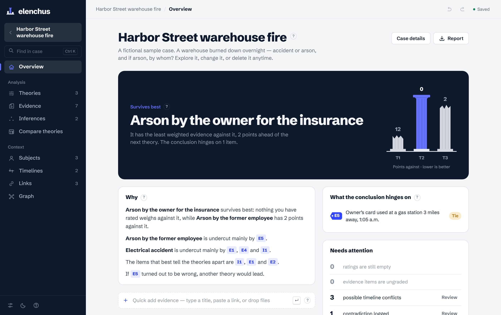
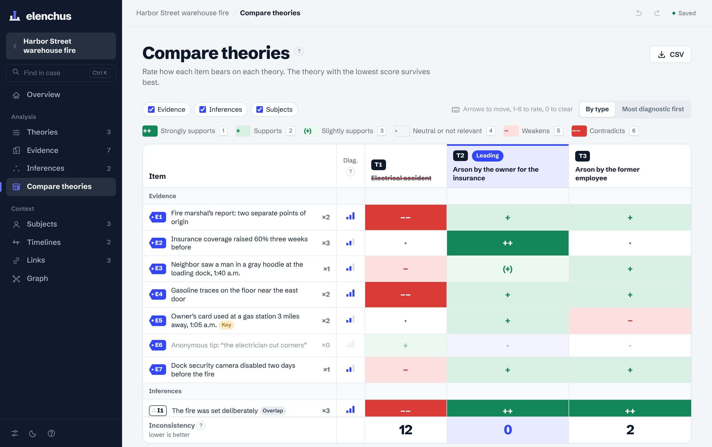
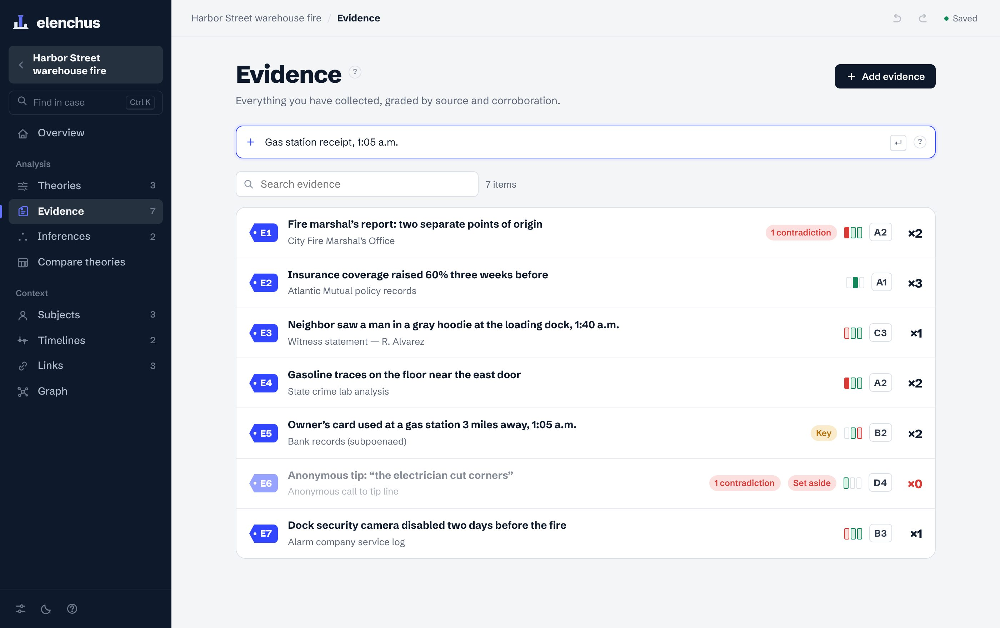
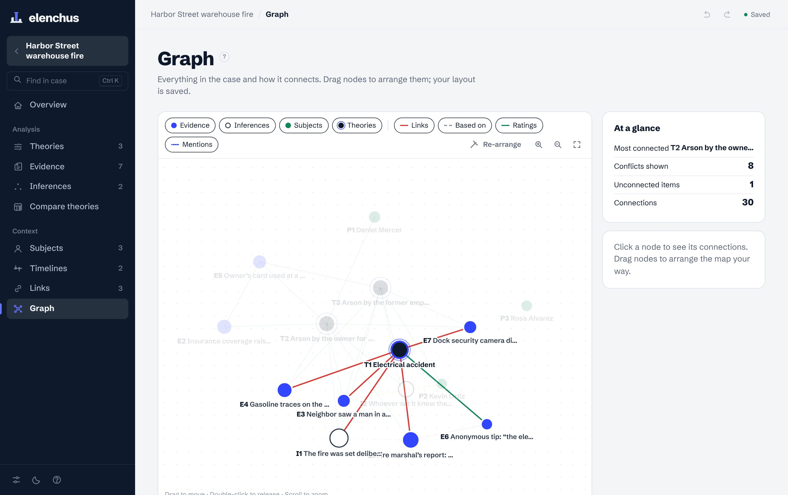
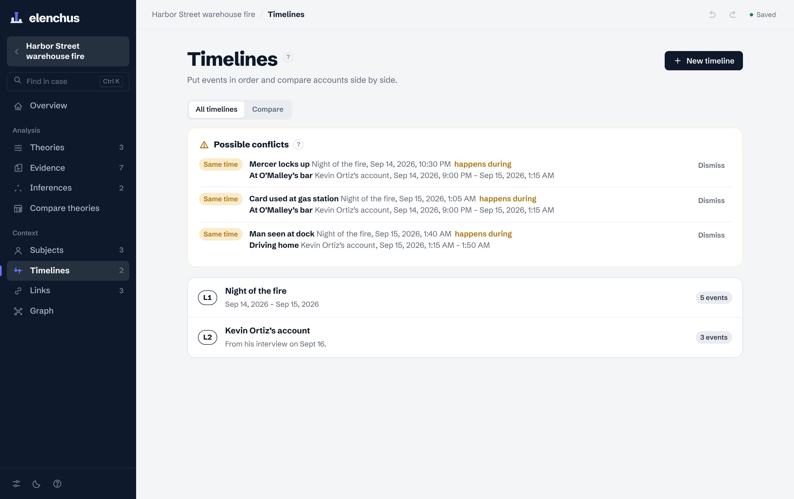

e·len·chus /ɪˈlɛŋ.kəs/ noun. Testing a claim by trying to refute it.
Elenchus is a case notebook built on Analysis of Competing Hypotheses, the method intelligence analysts use to avoid jumping to conclusions. Write down every explanation, grade your evidence, and watch which one is still standing.
Free to startNo accountYour cases stay on your computer
Each theory is a column. Evidence against it breaks it.

How it works
Most people pick a favorite explanation and collect reasons to believe it. Elenchus turns that around: the theory that wins is the one with the least evidence against it.
Write down every plausible explanation, including the ones you doubt. Templates suggest a starting set for common questions.
Rate each source’s reliability and how well it is corroborated. Elenchus works out its weight, from ×0 to ×3.
Mark whether each item supports, weakens or contradicts each theory. The columns rise and break as you go.
Compare
The comparison table is the heart of the method. Rate with a click or straight from the keyboard, and Elenchus shows which items actually separate your theories.

Evidence
Type a title and press Enter, paste a link or an image, or drop files anywhere on a case. Every item gets an exhibit tag like E7 that never changes.

Graph
A living map of theories, evidence, people and inferences. Drag nodes wherever you want; your layout is saved with the case.

Timelines
Build one timeline per witness or source. Elenchus checks them against each other and flags events that collide.

A written explanation of what weighs against each theory and what the result depends on.
⌘Z works on every change, not just text.
Find a name, a phrase or a receipt across your whole library.
Each case is a regular file in a folder you choose. Back it up, sync it, move it.
A clean PDF of the whole case, with the comparison and the reasoning.
Switch the whole interface in Settings. Light and dark themes.
Who it’s for
Pricing
or $79 a year, two months free
Prices in US dollars; taxes are calculated at checkout. If you cancel, you keep every case you made; only Pro features stop. Full refund within 14 days of your first payment.
Privacy
Investigations hold sensitive material. Elenchus has no cloud, no accounts and no tracking. What you write is saved as files on your own disk, and we never see it.
Download
Version 3.0 for macOS and Windows. Free to download and use.
MacBook and iMac from late 2020 on (M1, M2, M3, M4). macOS 12 or later.
Download for MacA method developed by Richards Heuer for the CIA. Instead of asking which theory has the most support, it asks which has the least evidence against it, because supporting evidence often fits several theories at once.
In a folder on your computer (Documents › Elenchus by default). Each case is a file you can back up, move, or sync with iCloud Drive, Dropbox or OneDrive.
Elenchus is made by an independent developer and is not yet signed with paid Apple and Microsoft certificates. The app is the same; the warning appears once and the steps above get you past it.
No. It organizes your reasoning and shows what your own ratings imply. Scores depend on the evidence and judgments you enter, and they are not legal or forensic advice.
Use the link in your receipt email, at any time. You keep Pro until the end of the period you paid for, and you never lose access to your cases.
Elenchus is Dossier’s new name. The first time you open it, it copies your Dossier cases over automatically and leaves the originals untouched.